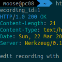

Arrange-Act-Assert vs Given-When-Then
Or: How to structure your tests
Or: How to structure your tests

What it is, aspects to consider, and tools you can use
Boost your productivity and make tests easier to reproduce

REST API basics and how to send requests with HTTPie
Pytest is extensible and has plenty of plugins. You don’t need to use any of them, but you might find some very useful. I love this because it's easy to get started with unit testing, while still finding amazing stuff when you’re more experienced 🤩 In this article, I …
We need to kill the mutants — no, I’m not a villain from the X-Men comics. I’m a software engineer who wants to improve unit tests. In this article, you will learn what mutation testing is and how it can help you to write better tests. The examples are …
When you write unit tests, it’s hard to find the right test cases. You want to be certain that you covered all the interesting cases, but you could simply not know or forget one of them. For example, if you unit test a function which receives an integer, you …
Testing code is often pretty ugly: A lot of copy & paste, the code is all over the place and hard to understand. In this article, you will learn how to structure unit testing code in Python. Directory Layout I put the tests next to the package. So the tests are …
When I started developing Python packages, there was one mistake I made quite often: I forgot to add all dependencies. Additionally, I only tested on my machine for a single Python version. After reading this article, you will know how to locally and automatically test multiple Python versions in isolated …
As a data scientist, I need to make my models accessible. I usually deploy models with Flask. As a software engineer, I want to make sure things work as expected by unit testing them. Unit testing websites or web services is hard for multiple reasons: You have code-within-code like HTML …